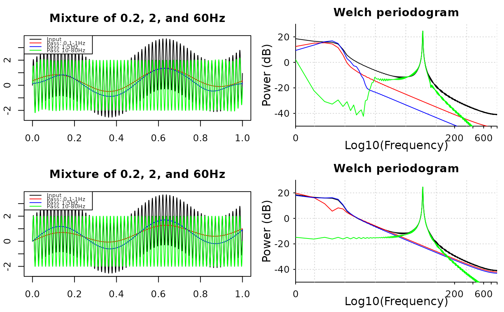

Band-pass signals
input signals, numeric vector or matrix. x must be
row-major if input is a matrix: each row is a channel, and each column is
a time-point.
sampling frequency
lower frequency bound of the band-passing filter, must be positive
upper frequency bound of the band-passing filter, must be greater than the lower bound and smaller than the half of sampling frequency
1 if x is in time-domain, or 0 if x is in
frequency domain
ignored
the order of the filter, must be positive integer and be less than one-third of the sample rate
filter type, choices are 'fir' and 'butter'
filter direction, choices are 'forward',
'backward', and 'both' directions
window type, can be a character, a function, or a vector.
For character, window is a function name in the
signal package, for example, 'hanning'; for a function,
window takes one integer argument and returns a numeric vector
with length of that input; for vectors, window is a numeric vector
o length order+1.
Filtered signals, vector if x is a vector, or matrix of
the same dimension as x
t <- seq(0, 1, by = 0.0005)
x <- sin(t * 0.4 * pi) + sin(t * 4 * pi) + 2 * sin(t * 120 * pi)
y1 <- band_pass1(x, 2000, 0.1, 1)
y2 <- band_pass1(x, 2000, 1, 5)
y3 <- band_pass1(x, 2000, 10, 80)
order <- floor(2000 / 3)
z1 <- band_pass2(x, 2000, 0.1, 1, method = "fir", order = order)
z2 <- band_pass2(x, 2000, 1, 5, method = "fir", order = order)
z3 <- band_pass2(x, 2000, 10, 80, method = "fir", order = order)
par(mfrow = c(1, 2))
plot(t, x, type = 'l', xlab = "Time", ylab = "",
main = "Mixture of 0.2, 2, and 60Hz")
lines(t, y1, col = 'red')
lines(t, y2, col = 'blue')
lines(t, y3, col = 'green')
legend(
"topleft", c("Input", "Pass: 0.1-1Hz", "Pass 1-5Hz", "Pass 10-80Hz"),
col = c(par("fg"), "red", "blue", "green"), lty = 1
)
plot(t, x, type = 'l', xlab = "Time", ylab = "",
main = "Mixture of 0.2, 2, and 60Hz")
lines(t, z1, col = 'red')
lines(t, z2, col = 'blue')
lines(t, z3, col = 'green')
legend(
"topleft", c("Input", "Pass: 0.1-1Hz", "Pass 1-5Hz", "Pass 10-80Hz"),
col = c(par("fg"), "red", "blue", "green"), lty = 1
)
